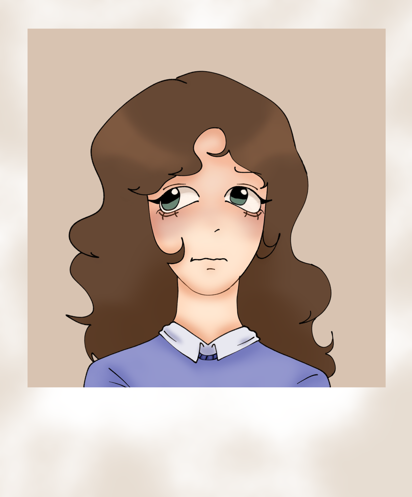
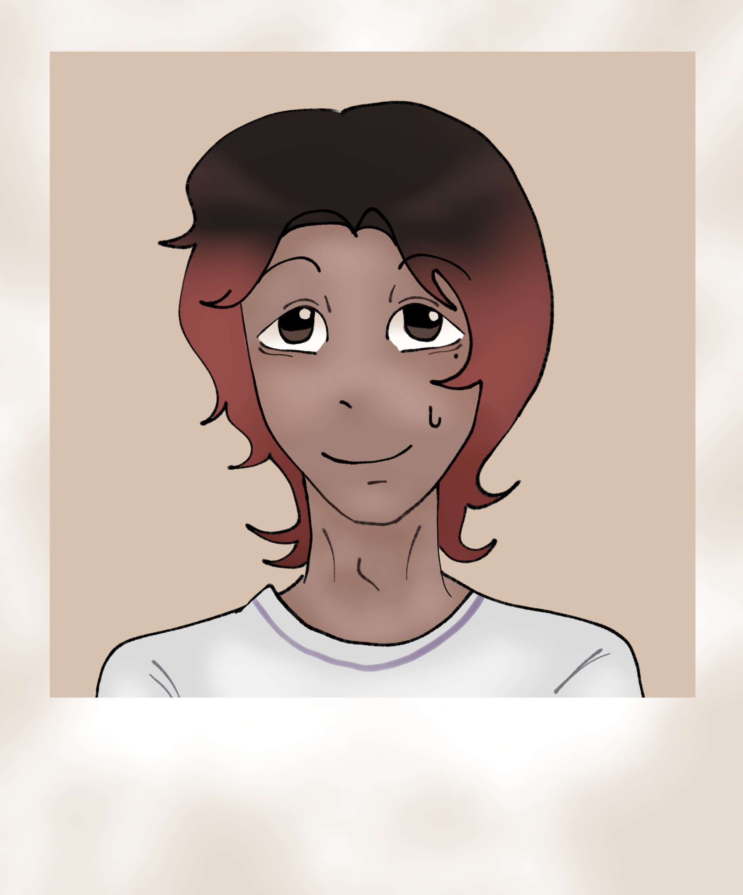

CHARACTERS
Hello. These are the characters from the show I mentioned on this blog. I found their photographs alongside the VHS tapes, accompanied by a short description.
I will write down exactly what was written on them.

AMARIS
Amaris is an adventurous and intelligent girl, although she has many unresolved emotional issues. She tends to be quite impulsive and can sometimes become aggressive, especially when she feels frustrated or threatened.

ALYA
Alya is a mysterious, popular girl who is considered very beautiful. Despite easily attracting attention, she tends to reject any attempt at getting close to her and keeps others at a distance. She seems to be a very reserved person, although nobody knows exactly what is hidden behind that attitude.

MATEO
Mateo is considered by many to be weird or a nerd. He tends to be quiet and keep to himself, but when something really interests or excites him, he can talk about it for hours without realizing it. He is not particularly fond of physical effort and usually avoids activities that require too much movement or energy.

EIR
Eir is a girl full of surprises. She is strong, agile, and impulsive, and tends to act before thinking about the consequences. She has a lot of energy and rarely backs down from a challenge, although her impulsiveness can sometimes get her into trouble.

ARITZ
Aritz is a strong boy, but mainly in an emotional sense. Physically, he does not stand out much and tends to have quite a few difficulties in that regard. He is rather shy, but once he becomes comfortable with someone, he becomes much more talkative and approachable.

MARTINA
Martina is not very sociable and tends to be quite reserved. She rarely seeks the company of others and prefers to remain in her own space. To many people, it is as if she were invisible, since she rarely draws attention or participates in groups. However, she seems to notice much more than others think.

SANTIAGO
Santiago is a rather absent-minded but very optimistic boy. He often gets lost in his own thoughts and doesn't always pay attention to what's happening around him. Even so, he keeps a positive attitude and tries to see the good side of things, even when things don't go as he expected.